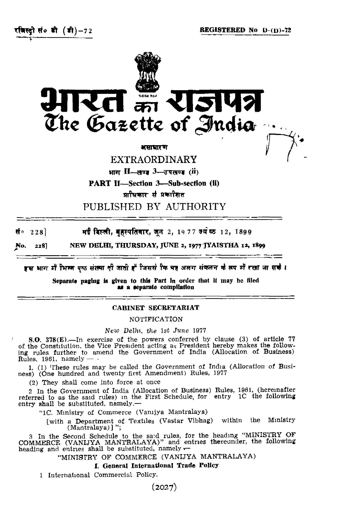
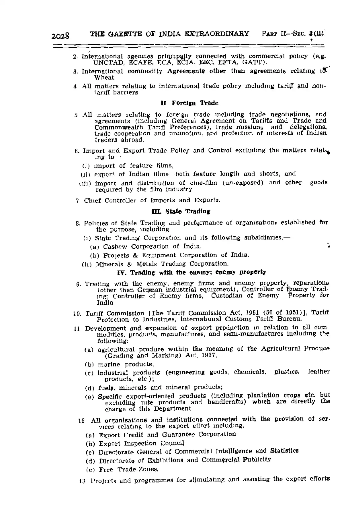
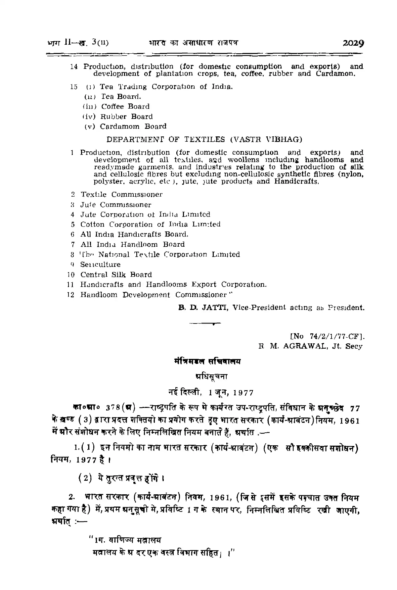
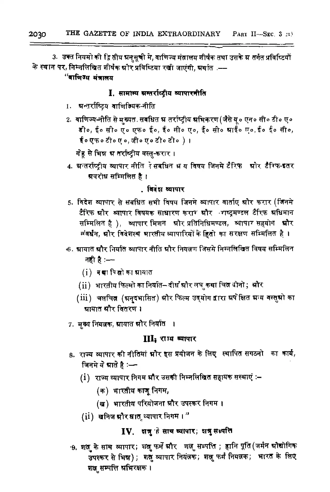
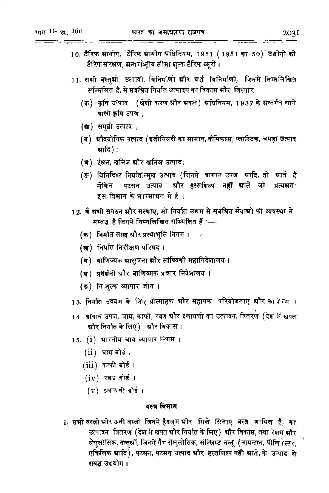
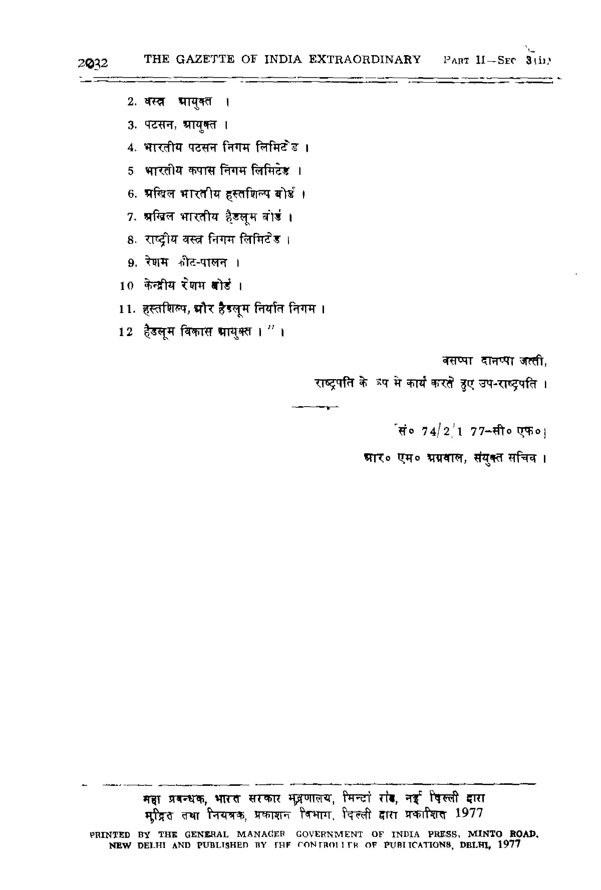

Amendment #121 (S.O. 378(E), 1977)
2 changes: 1 to the First Schedule, 1 to the Second Schedule. 2 applied
What it did to the ministries
- shrankMinistry of Commerce shrinks from 24 to 14 subjects change 1, 2 · histories: Commerce
The order, page by page
Page 1 of 6

12Schedule 1 › entry 1C
- 1C. Ministry of Commerce
- -. Department of Textiles (Vastar Vibhag ) Wwlthin the Ministry (Mantralaya)
applied at schedule 1 › ministry 1C in the Rules after #121
Schedule 2 › MINISTRY OF COMMERCE
- MINISTRY OF COMMERCE
- I. General International Trade Policy
- 1. International Commercial Policy.
- 2. International agencies principally connected with commercial policy (e.g. UNCTAD, ECAFE, ÉCA, ECIA, EEC, EFTA, GATT).
- 3. International commodity Agreements other than agreements relating to Wheat
- 4. All matters relating to international trade policy including tariff and nontariff barriers II Foreign Trade
and 26 more
- 5. All matters relating to foreign trade including trade negotiations, and agreements (including General Agreement on 'Tariffs and Trade and Commonwealth Tariff Preferences), trade missions and delegations trade cooperation and promotion, and protection of interests of Indian traders abroad.
- 6. Import and Export Trade Policy and Control excluding the matters relat ing to (1) import of feature films (11) export of Indian films-both feature length and shorts, and (11) import and distribution of cine-film (un-exposed) and other goods required by the film industry
- 7. Chief Controller of Imports and Exports.
- III. State Trading
- 8. Policies of State Trading and performance of organisations established for the purpose, including (1) State Trading Corporation and its following subsidiaries.
- a. Cashew Corporation of India
- b. Projects & Equipment Corporation of India. (11) Minerals & Metals Trading Corporation.
- IV. Trading with the enemy; enemy property
- 9. Trading with the enemy, enemy firms and enemy property, reparations (other than German industrial equipment), Controller of Enemy Trading; Controller of Enemy firms, Custodian of Enemy Property for India
- 10. Tariff Commission [The Tariff Commission Act, 1951 (50 of 1951)], Tariff Protection to Industries, International Customs Tariff Bureau.
- 11. Development and expansion of export production in relation to all commodities, products, manufactures, and semi-manufactures including the following:
- a. agricultural produce within the meaning of the Agricultural Produce (Grading and Marking) Act, 1937
- b. marine products
- c. industrial products (engineering goods, chemicals, plastics, leather products, etc)
- d. fuels, minerals and mineral products
- e. Specific export-oriented products (including plantation crops etc. but excluding jute products and handicrafts) which are directly the charge of this Department
- 12. All organisations and institutions connected with the provision of ser. vices relating to the export effort including.
- a. Export Credit and Guarantee Corporation
- b. Export Inspection Council
- c. Directorate General of Commercial Intelligence and Statistics
- d. Directorate of Exhibitions and Commercial Publicity
- e. Free Trade-Zones.
- 13. Projects and programmes for stimulating and assisting the export efforts
- 14. Production, distribution (for domestic consumption and exports ) and development of plantation crops, tea, coffee, rubber and Cardamon. 15 (1) Tea Trading Corporation of India. ( 12 ) Tea Board. (111) Coffee Board
- iv. Rubber Board
- v. Cardamom Board DEPARTMENT OF TEXTILES ( VASTR VIBHAG ) 1 Production, distribution (for domestic consumption and exports ) and development of all textiles, and woollens including handlooms and readymade garments, and industries relating to the production of silk and cellulosic flores but excluding…
applied at schedule 2 › ministry MINISTRY OF COMMERCE in the Rules after #121
read page break
Page 2 of 6

Page 3 of 6

Page 4 of 6

Page 5 of 6

Page 6 of 6

How this document was read
From the Government of India (Allocation of Business) Rules, 1961 and their amendments, as published by the Cabinet Secretariat (cabsec.gov.in), read by orgpedia. The readings of the older scanned gazettes have known gaps.